🚨 Numery alarmowe — zatrucie grzybami
Polska
22 831 98 05
Centrum Informacji Toksykologicznej
Polska
112
Pogotowie ratunkowe
Czechy
224 919 293
Toxikologické informační středisko
Słowacja
02 5477 4166
Národné toxikologické centrum
⚠ Jeśli podejrzewasz zatrucie grzybami: Zadzwoń natychmiast — nawet przy braku objawów. Zachowaj resztki grzyba lub zrób zdjęcie. W przypadku muchomora sromotnikowego pierwsze objawy pojawiają się po 6–24 h — gdy już się pojawią, zniszczenie wątroby jest często nieodwracalne. Czas ma kluczowe znaczenie.
☠ Muchomory śmiertelne — amanityny
Amanityny (amatoksyny) to cykliczne peptydy blokujące polimerazy RNA II i III — hamują syntezę białek we wszystkich komórkach. Działają z opóźnieniem 6–24 h, przez co ofiara początkowo czuje się dobrze. Do chwili pojawienia się objawów zniszczenie wątroby i nerek jest często już głębokie. Nie istnieje swoiste antidotum.
Muchomor sromotnikowy
CZ: muchomůrka zelená · SK: muchotrávka zelená · Amanita phalloides
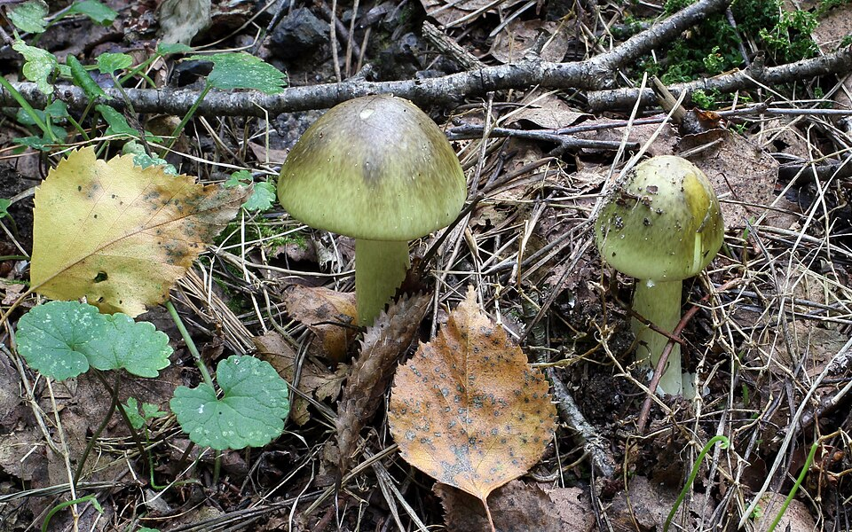
dojrzały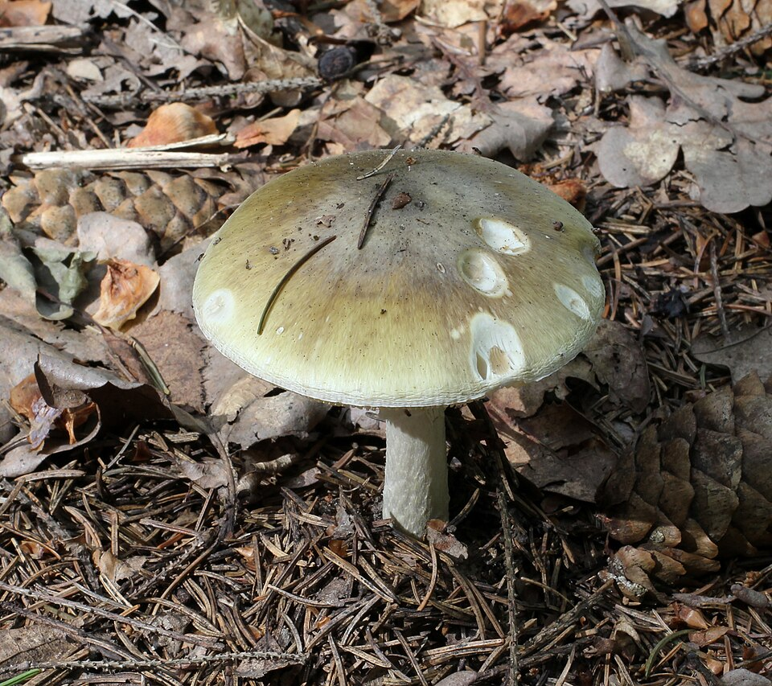
volva u dołu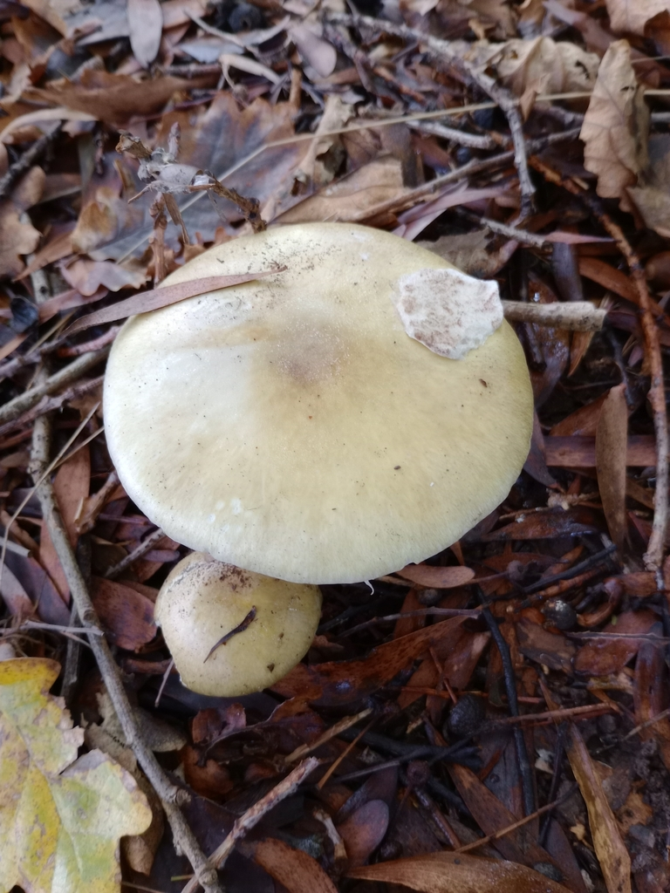
od spodu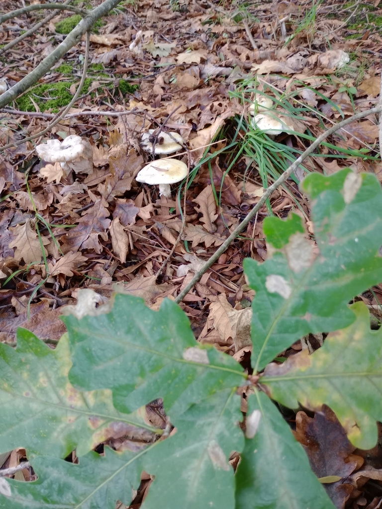
młody okaz
Ryzyko pomyłki z: Pieczarką łąkową (A. campestris), Czubajką kanią (gdy zamknięty), Gołąbkami zielonymi (Russula), Boczniakami przez dzieci. Najczęściej zbierany przez pomyłkę przez imigrantów, którzy w ojczyźnie zbierali podobne jadalne gatunki.
Cechy rozpoznawcze
- Kapelusz 5–12 cm, bladozielony do żółtawobiałego (kolor zmienny!)
- Blaszki zawsze białe (nigdy różowe jak u pieczarki)
- Pochwa (volva) u podstawy — biała, miseczkowata, często w ziemi
- Pierścień na trzonie — błoniasty, zwisający
- Podstawa trzonu bulwiasta, zanurzona w ziemi
- Brak smaku i zapachu ostrzegawczego — pachnie przyjemnie
Różnice od pieczarki łąkowej
- Pieczarka: blaszki różowe → brązowe ✔
- Muchomor: blaszki zawsze białe ✗
- Pieczarka: rośnie na łące, brak pochwy ✔
- Muchomor: często w lesie, pochwa w glebie ✗
- Pieczarka: lekko żółknie po cięciu, anyżowy zapach ✔
- Muchomor: nie żółknie, brak zapachu ostrzegawczego ✗
Toksyna: α-amanityna — blokuje polimerazę RNA II, uniemożliwia syntezę białek. Dawka śmiertelna: 0,1 mg/kg masy ciała (jeden grzyb może zabić dorosłego). Termoodporna — gotowanie NIE niszczy toksyny. Nie traci aktywności po suszeniu ani marynowaniu.
Przebieg zatrucia
0–6 h po spożyciuBrak objawów — najgroźniejszy etap, bo ofiara nic nie podejrzewa
6–24 hNagłe gwałtowne wymioty, biegunka, bóle brzucha, odwodnienie
1–3 dobyPozorna poprawa — narządy wewnętrzne już ulegają zniszczeniu
4–8 dóbOstra niewydolność wątroby i nerek, żółtaczka, śmierć
Muchomor jadowity (niszczyciel)
CZ: muchomůrka jízlivá · SK: muchotrávka jedovatá · Amanita virosa
 dojrzały
dojrzały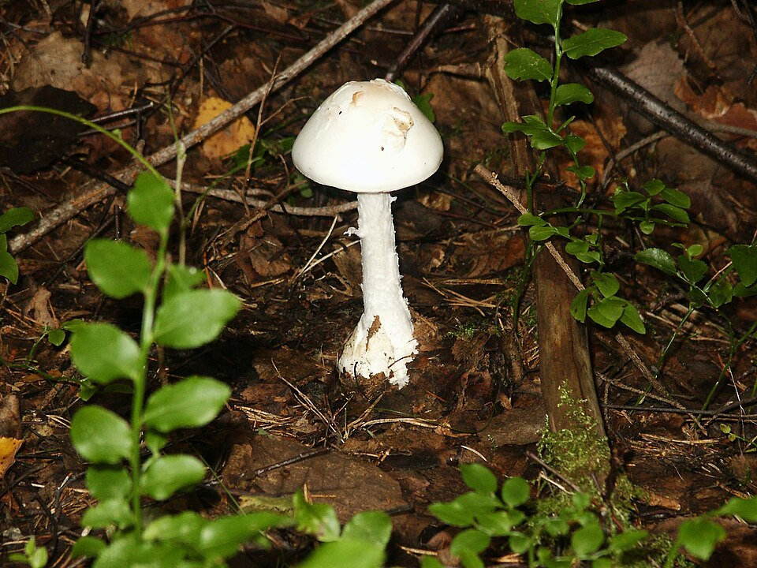
volva u dołu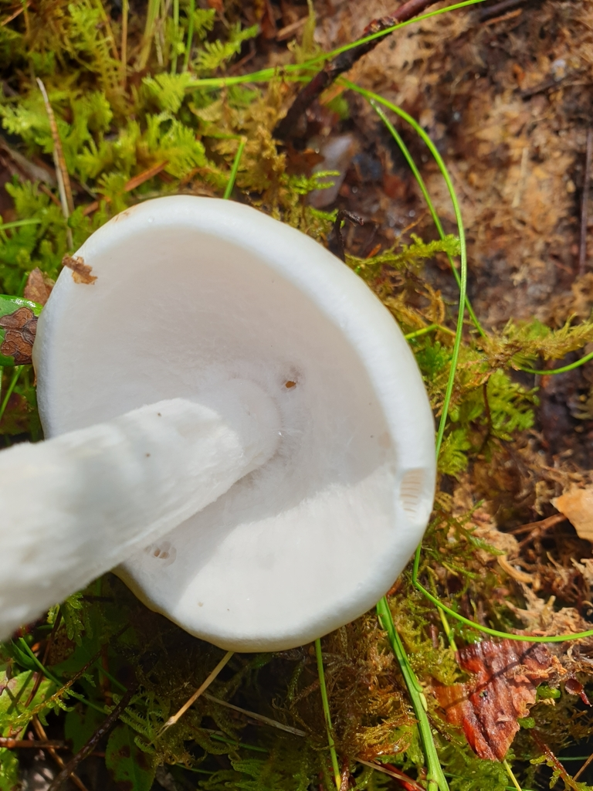
od spodu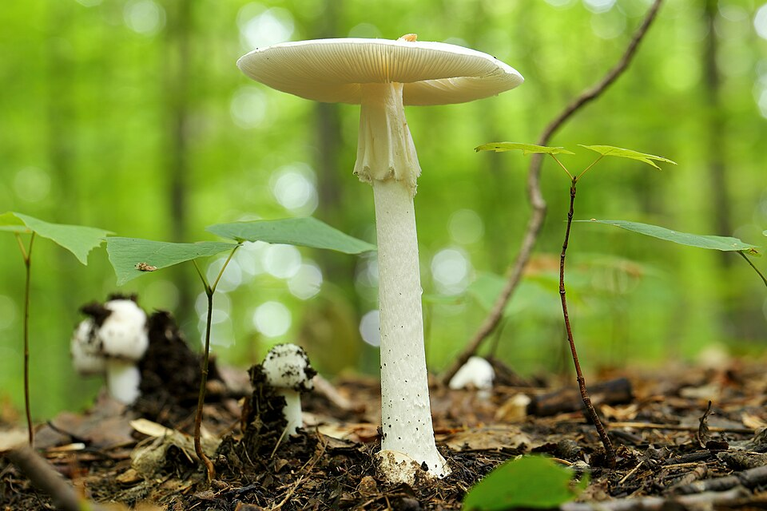
młody okaz
Ryzyko pomyłki z: Pieczarką łąkową (młode okazy — całkowicie białe), Czubajką kanią (bębenek), Grzybem śnieżnobiałym. Szczególnie niebezpieczny, bo jest całkowicie biały — może być wzięty za pieczarkę lub inny białawy grzyb jadalny.
Cechy rozpoznawcze
- Kapelusz 5–10 cm, śnieżnobiały, dzwonowaty
- Blaszki białe, wolne
- Pochwa biała, woreczkowata u podstawy
- Trzon biały, strzępiasty (jak wełna)
- Pierścień biały, błoniasty
- Zapach: mdły, nieprzyjemny u starszych okazów
Kluczowe wskazówki
- Biały kolor całego owocnika — podejrzewaj muchomora
- Sprawdź podstawę trzonu — pochwa w glebie = Amanita
- Rośnie w lasach liściastych i iglastych, nie na łąkach
- Ten sam mechanizm toksyczny co sromotnikowy (amanityny)
- Dawka śmiertelna analogiczna — jeden owocnik może zabić
Toksyna: α-amanityna — identyczna jak w muchomorze sromotnikowym. Przebieg i leczenie takie same. Równie śmiertelny.
Muchomor plamisty (panterowy)
CZ: muchomůrka tygrovaná · SK: muchotrávka škvrnitá · Amanita pantherina
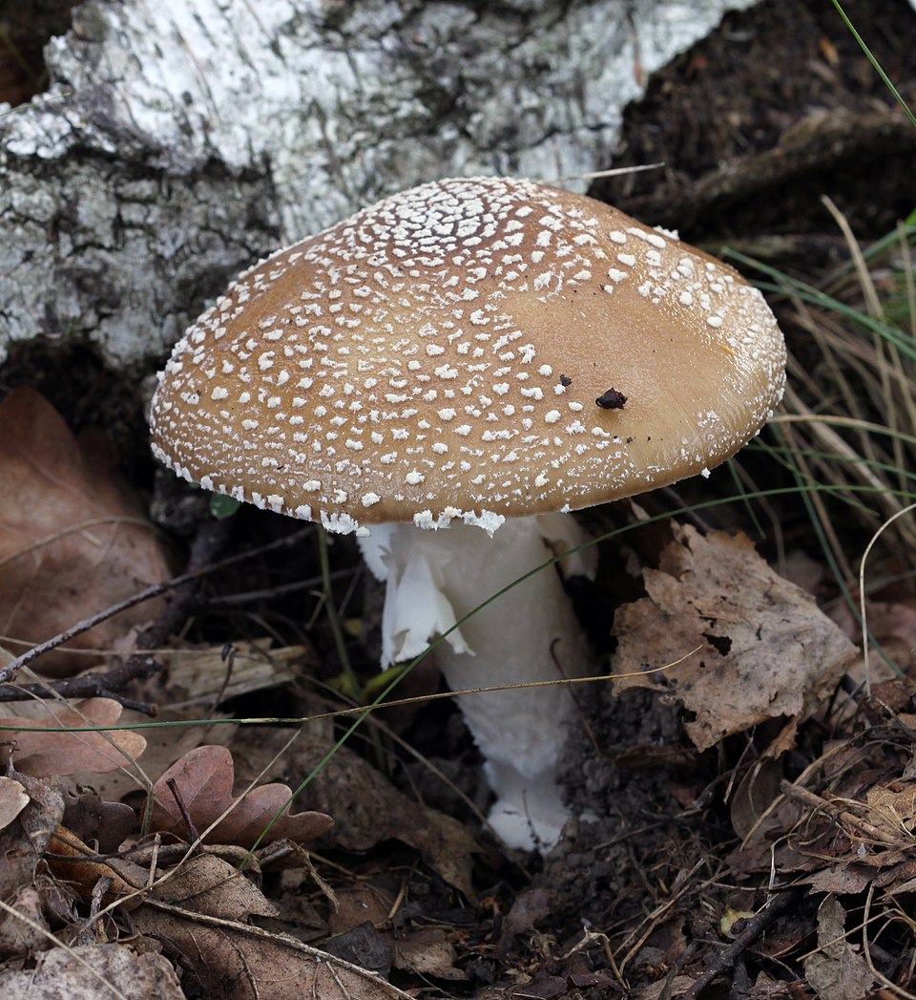
dojrzały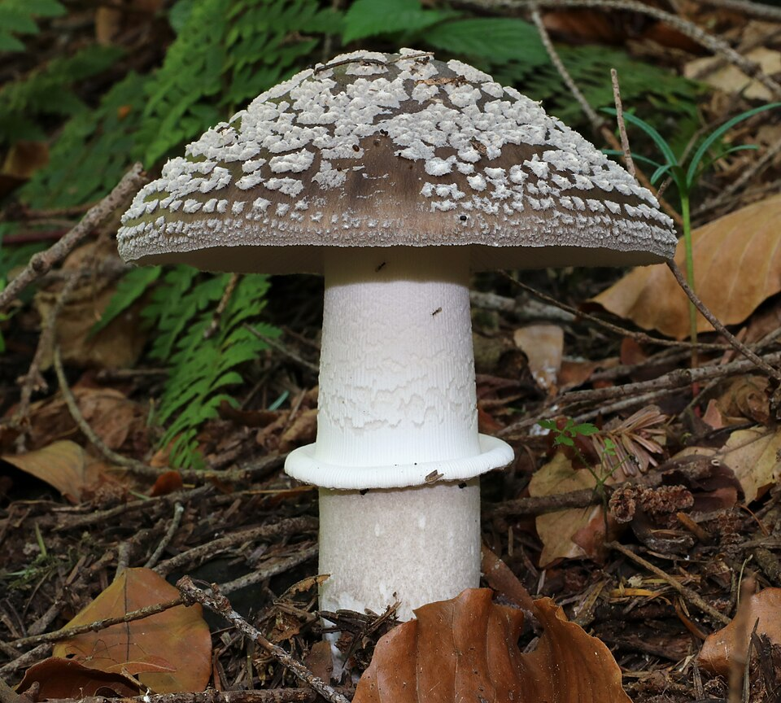
podstawa trzonu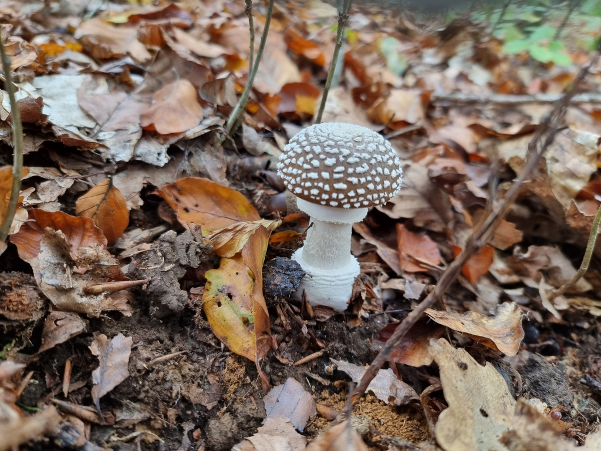
od spodu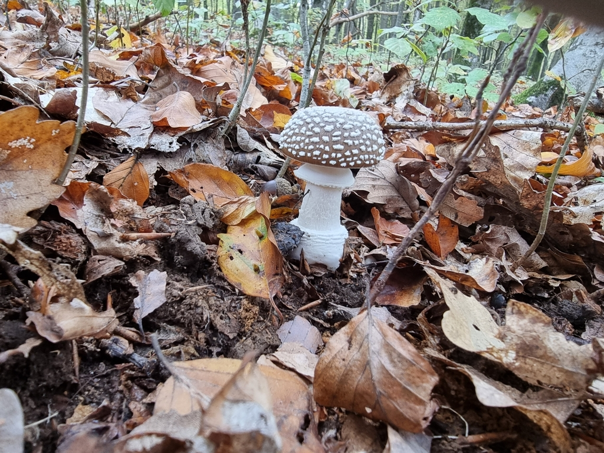
młody okaz
Ryzyko pomyłki z: Czubajką kanią (bębenek), Muchomorem plamistym i jadalnymi muchomorami (A. rubescens). Szczególnie groźny bo bywa mylony z czubajką kanią w stadium bębenka (zamknięty kapelusz).
Cechy rozpoznawcze
- Kapelusz 6–12 cm, brązowy do szarobrązowego
- Białe łatki na kapeluszu (pozostałości osłony)
- Blaszki białe, wolne
- Pochwa z kilkoma pierścieniami u podstawy
- Pierścień nieruchomy (różnica od kani!)
Różnice od kani
- Kania: pierścień ruchomy (przesuwa się po trzonie) ✔
- Muchomor: pierścień nieruchomy ✗
- Kania: trzon z wężowatym wzorem ✔
- Muchomor: trzon gładki, z pochewką ✗
- Kania: brak volvy u podstawy ✔
- Muchomor: wyraźna pochwa w glebie ✗
Toksyny: Ibotenic acid + muscimol — działają na OUN, powodując stany zbliżone do zatrucia. Objawy po 30 min–3 h: dezorientacja, halucynacje, skurcze, śpiączka. Bez amanityn — rzadko śmiertelny, ale wymaga hospitalizacji.
⚠ Trujące sobowtóry grzybów jadalnych
Hełmówka jadowita
CZ: závojenka jedovatá · SK: závojnatka jedovatá · Galerina marginata
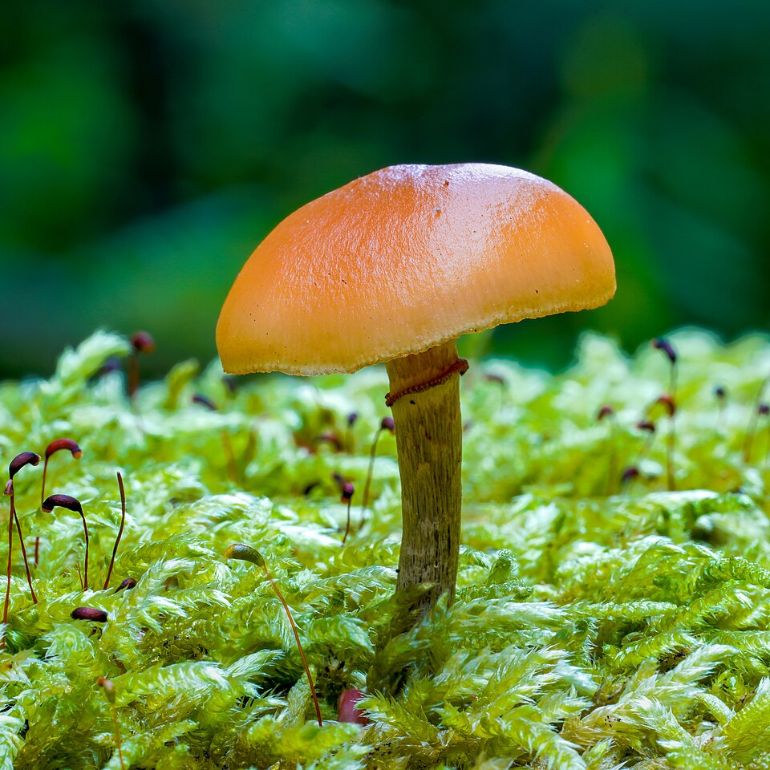
dojrzały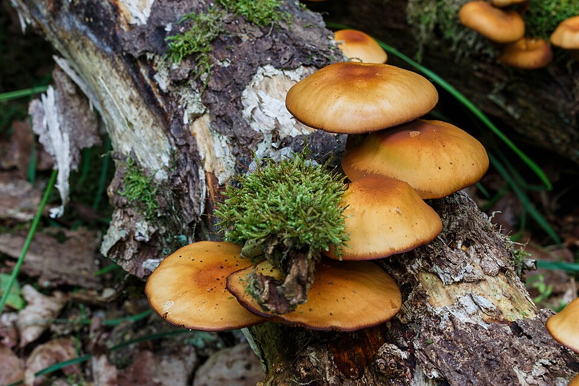
pierścień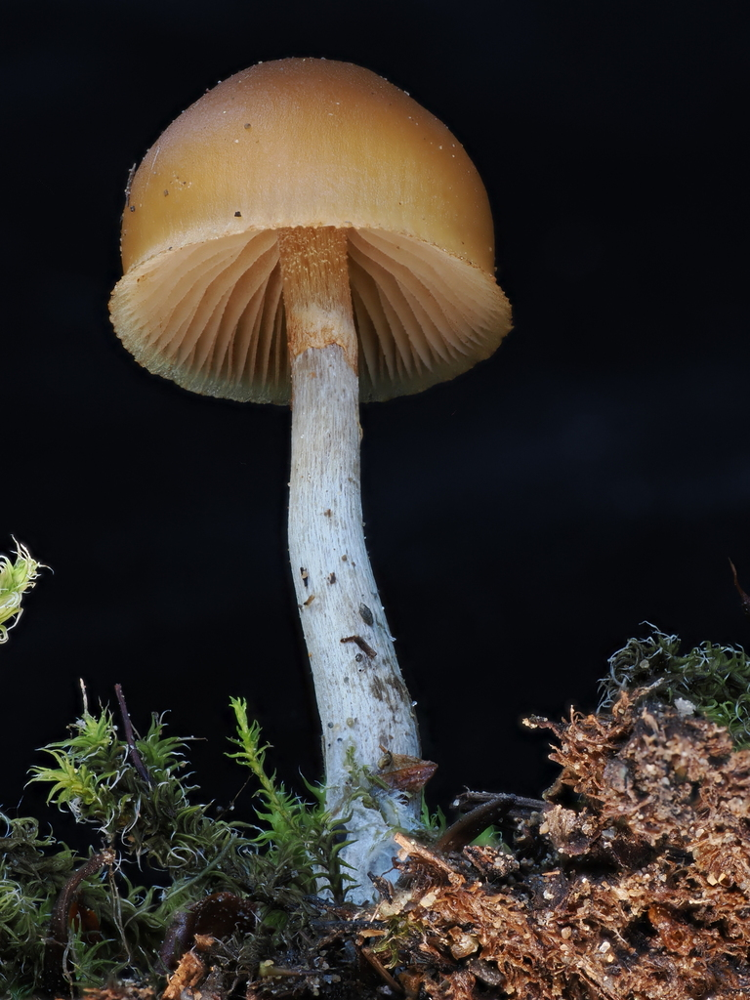
od spodu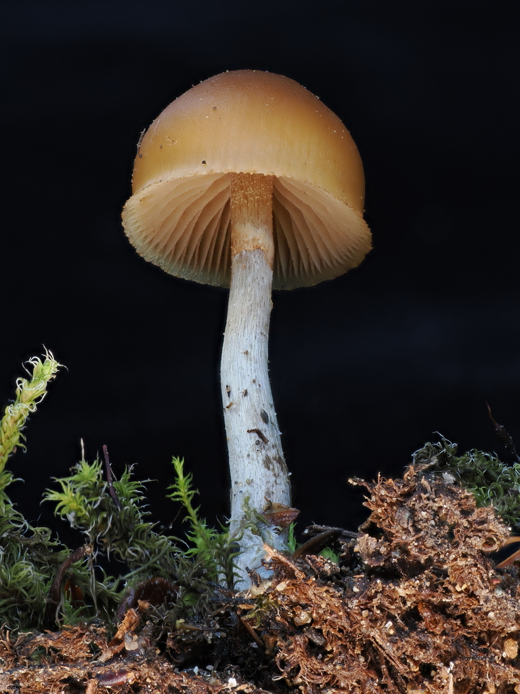
młody okaz
Ryzyko pomyłki z: Opieńką miodową (Armillaria mellea) — rośnie w tych samych miejscach (na pniakach), ma podobny wygląd i rozmiar. To jedna z najgroźniejszych pomyłek zbierackich.
Jak odróżnić od opieńki
- Opieńka: pierścień biały lub kremowy ✔
- Hełmówka: pierścień rdzawobrązowy ✗
- Opieńka: wysyp zarodników biały ✔
- Hełmówka: wysyp zarodników rdzawoczerwony ✗
- Opieńka: rośnie w dużych kępach (setki owocników) ✔
- Hełmówka: małe kępy lub pojedynczo ✗
Cechy hełmówki
- Kapelusz 1,5–5 cm, miodowożółty do rdzawobrązowego
- Blaszki rdzawobrązowe z wiekiem
- Trzon cienki, z błoniastym rdzawym pierścieniem
- Rośnie na pniakach iglastych i liściastych
- Zawiera amanityny — ten sam mechanizm co muchomor sromotnikowy
Toksyna: α-amanityna — identyczna z muchomorem sromotnikowym. Kilka owocników stanowi dawkę śmiertelną. Test na pewność: zrób odbitkę wysypu zarodników — biała = opieńka, rdzawa = hełmówka.
Piestrzenica kasztanowata (fałszywy smardz)
CZ: ucháč obecný · SK: ušiak obyčajný · Gyromitra esculenta
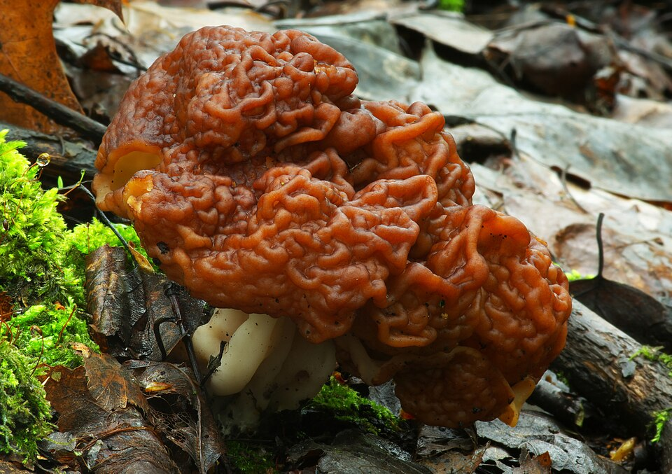
dojrzały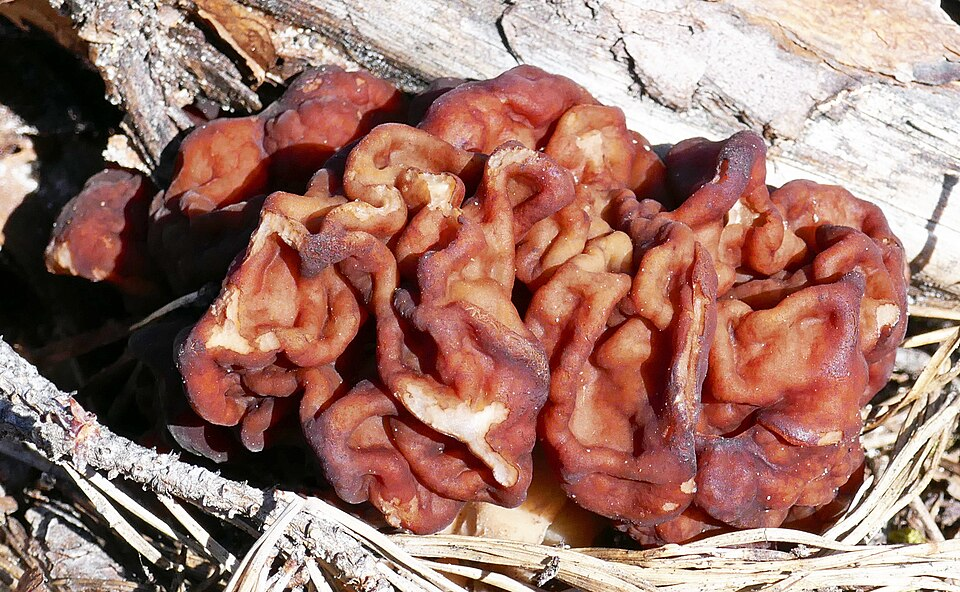
dojrzały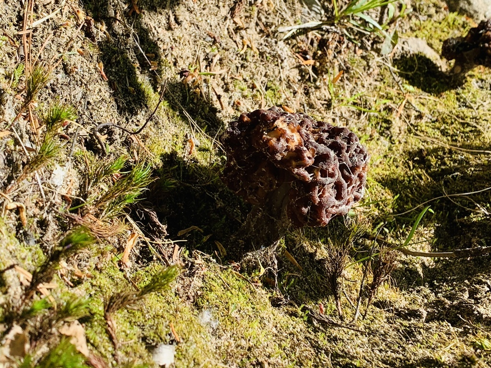
przekrój / spód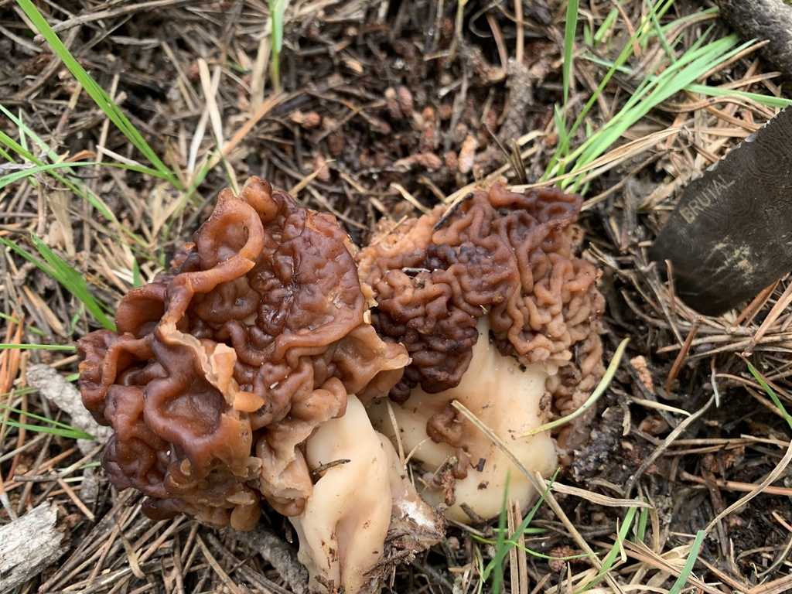
młody okaz
Ryzyko pomyłki z: Smardzem jadalnym (Morchella esculenta) — oba rosną wiosną (III–V), oba mają nieregularny kapelusz, oba rosną w sadach i lasach liściastych. Piestrzenica bywa jadana w niektórych krajach po specjalnym przygotowaniu — w Polsce i Czechach jest zakazana.
Jak odróżnić od smardzа
- Smardz: kapelusz regularny plaster miodu ✔
- Piestrzenica: kapelusz mózgowato pofałdowany, nieregularny ✗
- Smardz: wnętrze całkowicie puste ✔
- Piestrzenica: wnętrze komorowe, podzielone ✗
- Smardz: kapelusz kremowy do brązowego, żeberkowany ✔
- Piestrzenica: kasztanowobrązowy, „mózg" ✗
Cechy piestrenicy
- Kapelusz 3–10 cm, siodłowato sfałdowany jak mózg
- Kolor kasztanowobrązowy do wiśniowego
- Trzon kremowy, krótki, komorowy w przekroju
- Rośnie wiosną (III–V) w lasach iglastych i sadach
- W Polsce i Czechach sprzedaż zakazana
Toksyna: gyromitrin → metabolizuje się do monomethylhydrazine (składnik paliwa rakietowego). Uszkadza wątrobę, erytrocyty, OUN. Częściowo ulega rozkładowi przez gotowanie, ale pary z gotowania są toksyczne — gotuj w wentylowanym miejscu lub nie gotuj wcale.
Lejkówka pomarańczowa (świetlik oliwkowy)
CZ: olivovník olivový · SK: olivovec olivový · Omphalotus olearius
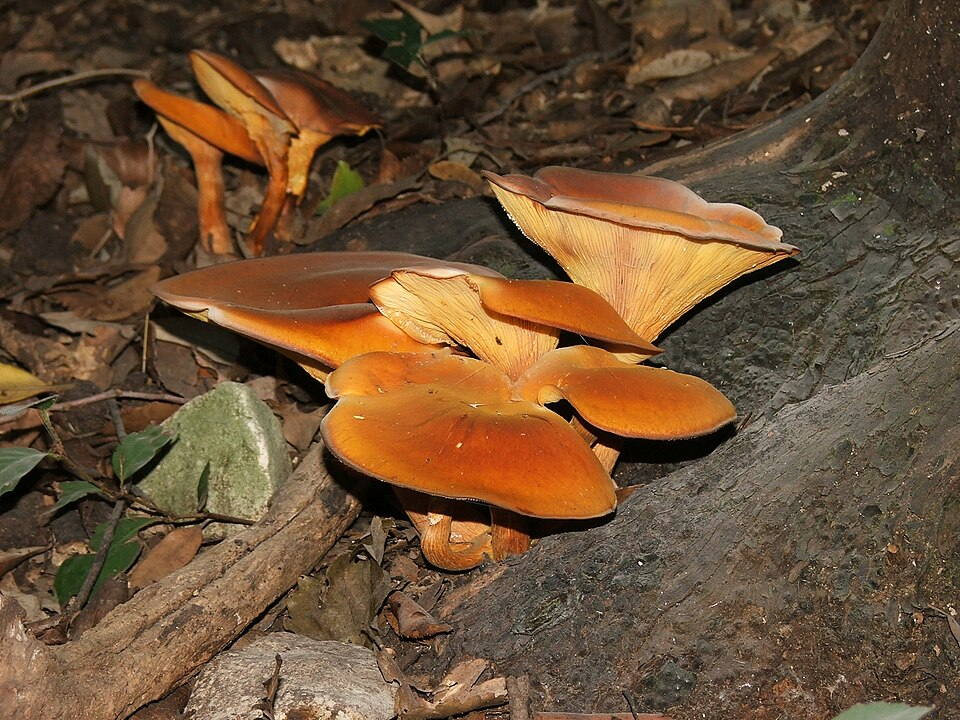
dojrzały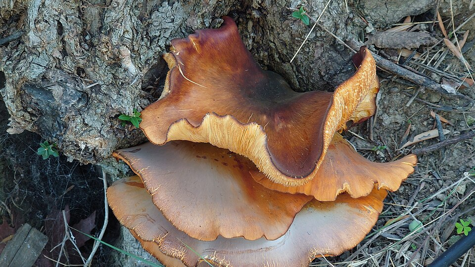
siedlisko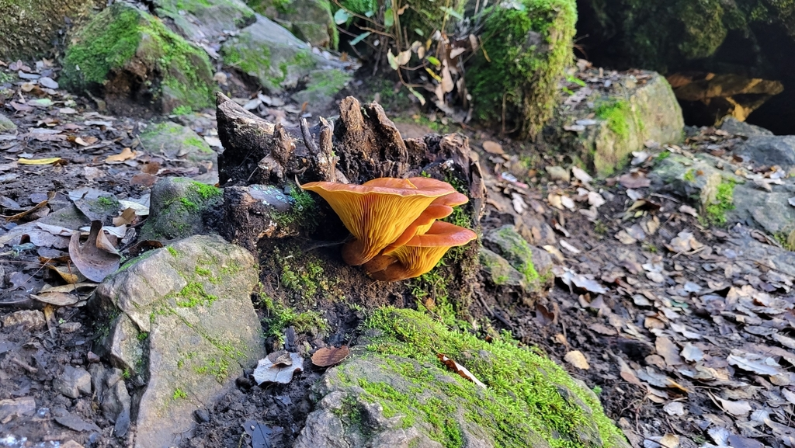
od spodu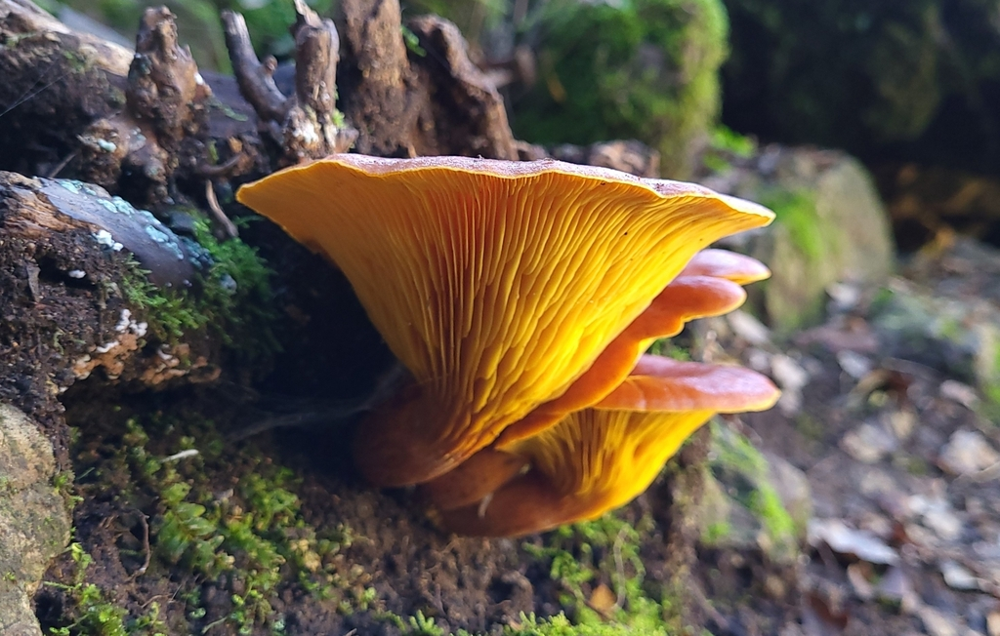
młody okaz
Ryzyko pomyłki z: Kurką/Pieprznikiem jadalnym (Cantharellus cibarius) — pomarańczowy kolor, podobny kształt kapelusza. Pomyłka często zdarza się niedoświadczonym zbieraczom w zachodniej i południowej Europie.
Jak odróżnić od kurki
- Kurka: fałdowce (tępe, rozgałęzione, jak żyłki) ✔
- Lejkówka: blaszki prawdziwe (cienkie, ostre) ✗
- Kurka: rośnie na ziemi w lesie, samotnie lub małe grupy ✔
- Lejkówka: rośnie na drewnie lub przy podstawie drzew, w kępach ✗
- Lejkówka: w ciemności lekko świeci (bioluminescencja) ✗
Cechy lejkówki
- Kapelusz 5–15 cm, pomarańczowożółty, lejkowaty
- Blaszki prawdziwe, gęste, zbiegają na trzon
- Rośnie w kępach przy korzeniach oliwek, dębów
- W Polsce rzadka (południe), częstsza w CZ, SK i PL południowej
- W nocy lekko fluorescuje (wskazówka!)
Toksyna: illudyny — powodują silne wymioty i biegunkę w ciągu 1–3 h. Nie jest śmiertelna (przy dorosłych), ale zatrucie jest bardzo nieprzyjemne i wymaga nawodnienia.
⚠ Gatunki mylące i niejadalne
Goryczak żółciowy (fałszywy borowik)
CZ: hřib žlučník · SK: hríb žlčník · Tylopilus felleus
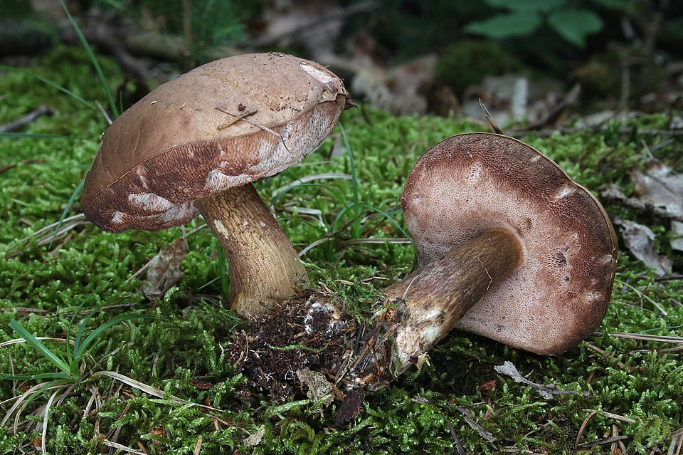
dojrzały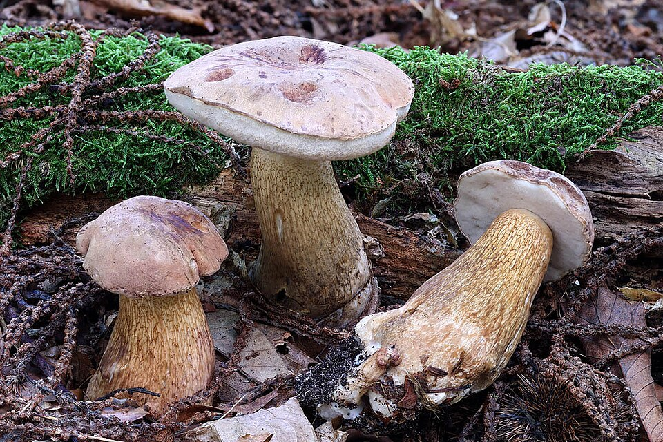
siateczka na trzonie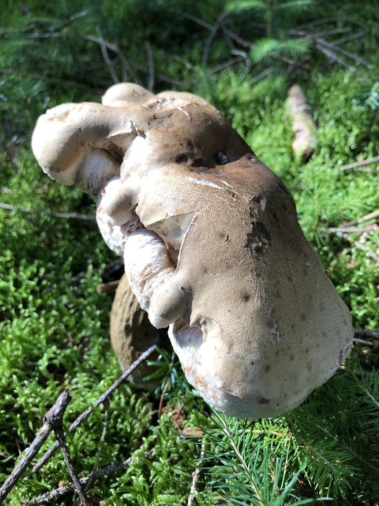
pory od spodu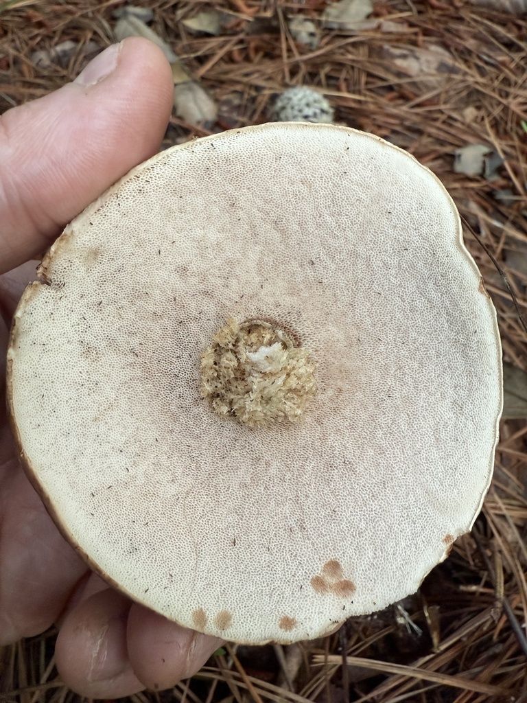
młody okaz
Ryzyko pomyłki z: Borowikiem szlachetnym — podobny kształt, brązowy kapelusz, biały miąższ. Często zbierany przez pomyłkę, nawet przez doświadczonych zbieraczy.
Jak odróżnić od borowika
- Borowik: pory białe → kremowe → żółtawe ✔
- Goryczak: pory różowe do brudnoróżowych ✗
- Borowik: siateczka na trzonie jasna ✔
- Goryczak: siateczka ciemna, brązowawa ✗
- Borowik: smak przyjemny, orzechowy ✔
- Goryczak: skrajnie gorzki — jeden kawałek psuje całą potrawę ✗
Kluczowe cechy
- Kapelusz 5–15 cm, brązowy — łatwy do pomylenia
- Pory od białych (młody) do różowych (dojrzały)
- Miąższ biały, lekko czerwienieje po cięciu
- Smak — nieznośnie gorzki, wyczuwalny nawet po przetarciu językiem
- Nie jest śmiertelny — ale psuje każdą potrawę natychmiast
Szybki test terenowy: Zwilż palec i przetrzyj powierzchnię porów, potem dotknij językiem. Jeśli pojawi się silna goryczka — to goryczak. Borowik jest neutralny w smaku.
Borowik szatański
CZ: hřib satan · SK: hríb satan · Boletus satanas
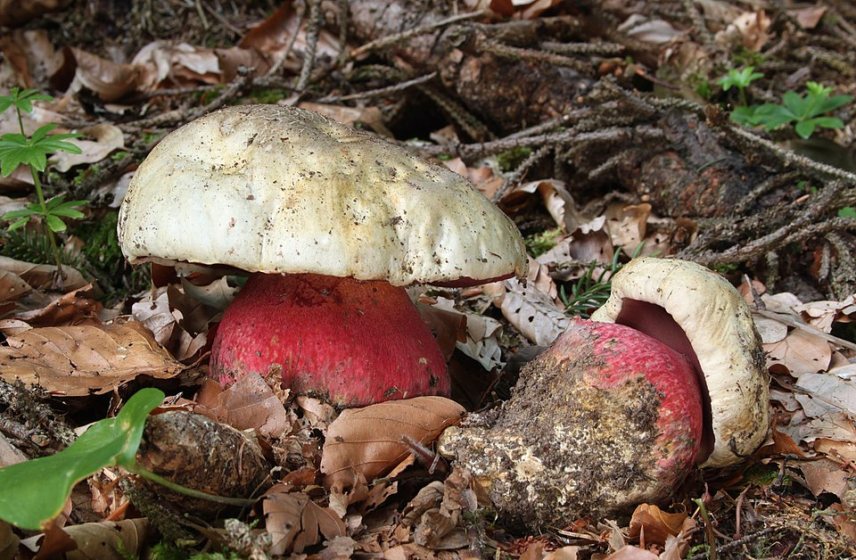
dojrzały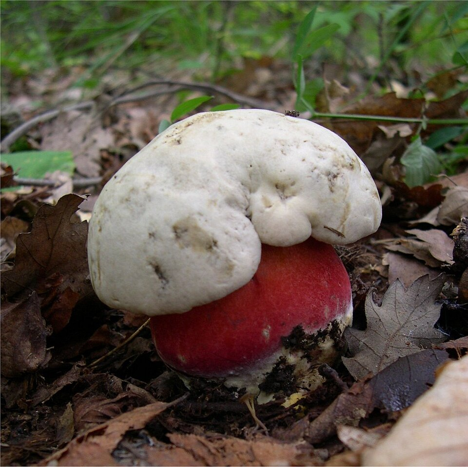
miąższ / sinienie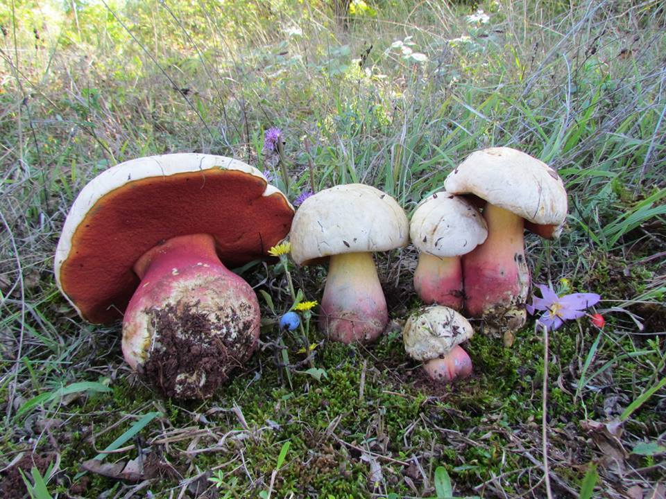
pory od spodu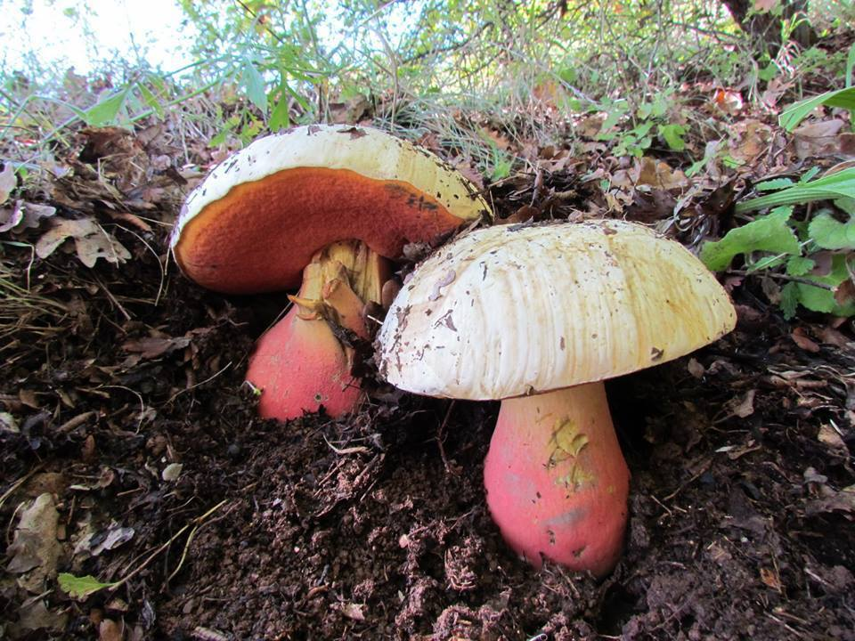
młody okaz
Ryzyko pomyłki z: Borowikiem szlachetnym lub Podgrzybkiem — podobna sylwetka, leśne środowisko. Wyróżnia się wyraźnym czerwonym kolorem porów i trzonu.
Cechy charakterystyczne
- Kapelusz 8–25 cm, szarawy do białawego (jasny!)
- Pory czerwone do pomarańczowoczerwonych — cecha pewna
- Trzon beczułkowaty, z czerwoną siateczką
- Miąższ sinieje intensywnie po przekrojeniu
- Rośnie pod liściastymi (dąb, buk), preferuje wapienne gleby
Zasada nieomylna
- Czerwone pory u rurkowca = nie zbierać!
- Dotyczy też Borowika krwistoczerwonawego i podobnych
- Borowik szlachetny ma pory białe/kremowe/żółte, nigdy czerwone
- Podgrzybek ma pory białe lub kremowe
- Maślak ma pory żółte, lepki kapelusz
Toksyny: bolesatyna i inne — powodują silne wymioty, biegunkę i stany zapalne. Opisywano także działanie hemolityczne. Surowy jest bardziej toksyczny — po długim gotowaniu część toksyczności zanika, ale nie warto ryzykować.
✓ Złote zasady bezpiecznego zbieractwa
1. Zasada pewności absolutnej: Zbieraj TYLKO grzyby, które rozpoznajesz ze 100% pewnością. Przy najmniejszej wątpliwości — zostaw. Żadna potrawa nie jest warta ryzyka.
2. Sprawdź podstawę trzonu: Zawsze wykopuj grzyb z ziemi, nie urywaj. Pochwa (volva) muchomorów jest ukryta w glebie — bez jej sprawdzenia możesz nie wiedzieć, z czym masz do czynienia.
3. Blaszki zawsze sprawdzaj: Przy pieczarkopodobnych grzybach — białe blaszki = zostaw. Różowe lub brązowe = pieczarka. Białe zawsze sugerują Amanita.
4. Rurkowiec z czerwonymi porami: Nigdy nie zbieraj. Żaden jadalny rurkowiec w Polsce, Czechach i Słowacji nie ma czerwonych porów.
💡 Dla nowych zbieraczy: Zacznij od gatunków bez niebezpiecznych sobowtórów — borowik szlachetny (unikalny), boczniak ostrygowaty (na drewnie, brak sobowtórów), rydz (pomarańczowe mleczko). Unikaj na początku: pieczarek polnych, opieńek, smardzy i kani — wymagają pewniejszego rozpoznania.